No hay secciones que coincidan con la búsqueda.
1. Qué es BingoMaster
BingoMaster es una aplicación de escritorio para Windows que ayuda a conducir bingos presenciales. Los números salen de una tómbola física y el operador los digita en la aplicación. Como la aplicación conoce el contenido de cada cartón registrado, puede validar un "¡bingo!" solo con el folio, sin revisar el cartón físico.
- Ventana del operador (en el notebook): ingreso de números, validación, configuración.
- Pantalla pública (en el proyector): tablero, último número, figura en juego y anuncio de ganadores.
- Sin internet: todo funciona offline, excepto la importación de cartones con IA (sección 12).
- Guardado automático: cada acción queda guardada al instante; si la aplicación se cierra, al reabrirla se recupera la sesión.
2. Instalación
- Ejecute
BingoMaster-Setup-x.y.z.exe. - El instalador no está firmado digitalmente, así que Windows SmartScreen puede advertir. Pulse Más información → Ejecutar de todas formas.
- Elija la carpeta de instalación. Se crean accesos directos en el escritorio y el menú Inicio.
También puede instalarse desde Microsoft Store (busque "Bingo Master"); en ese caso no hay advertencia de SmartScreen y las actualizaciones llegan por la Store.
Requisitos: Windows 10 u 11. Para la pantalla pública, un proyector o segundo monitor conectado al notebook (recomendado 1920×1080).
Al desinstalar, los datos (eventos, cartones, ganadores) no se borran. Ver sección 14.
3. Inicio rápido
- Evento y juegos → Nuevo evento. Nombre, fecha y código de serie (ej.
NOV26). Se carga una secuencia de juegos inicial. - Cartones → Generar la cantidad necesaria y Exportar PDF para imprimirlos.
- Conecte el proyector y pulse Abrir pública (arriba a la derecha).
- En Juego, digite cada número que sale de la tómbola y pulse Enter.
- Cuando alguien grita ¡bingo!, pulse F2, escriba el folio y la aplicación dirá VÁLIDO o NO VÁLIDO.
- Registre el ganador, muéstrelo en la pantalla pública y pulse Terminar juego para pasar al siguiente.
4. Ventanas y pantalla pública
La barra superior de la ventana del operador tiene las pestañas de trabajo y, a la derecha, los controles de la pantalla pública:
- Selector de pantalla: lista los monitores detectados. El proyector aparece como "— proyector".
- Abrir pública / Mover pública: abre la pantalla pública en la pantalla elegida. En un proyector se abre a pantalla completa; en el monitor principal se abre en ventana para no tapar el panel.
- Pantalla completa / Ventana y Cerrar.

La pantalla pública se actualiza sola con cada acción del operador. Nunca muestra información interna (por ejemplo, cuántos cartones están a un número).
El menú Ventana pública de la barra superior ofrece las mismas opciones.
5. Eventos y juegos
Un evento agrupa los cartones (propios y externos), la secuencia de juegos, los números cantados y los ganadores. Solo hay un evento activo a la vez.
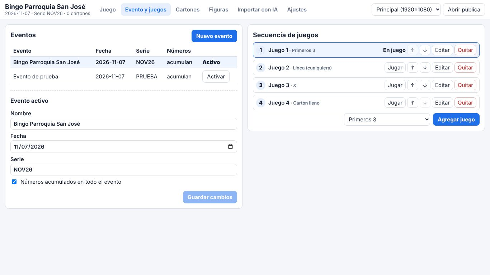
Crear un evento
- Nombre y fecha.
- Código de serie: 1 a 12 letras o números, sin espacios. Los cartones propios se numeran
SERIE-0001,SERIE-0002… No se puede cambiar después. - Números acumulados (marcado por defecto): los números cantados valen para todos los juegos del evento. Si lo desmarca, cada juego empieza con el tablero vacío. Solo se puede cambiar mientras no haya números cantados.
Al crearlo, el evento queda activo y con la secuencia inicial: Primeros 3 → Línea (cualquiera) → X → Cartón lleno. Para cambiar de evento use Activar en la lista.
Secuencia de juegos
- Agregar juego: elija la figura y pulse "Agregar juego".
- ↑ / ↓ cambian el orden; Editar cambia el nombre o la figura (la figura no se puede cambiar si el juego ya tiene ganadores).
- Quitar: solo juegos sin números ni ganadores.
- Jugar: pone ese juego en curso. Reabrir: vuelve a abrir un juego terminado.
- Si un evento no tiene juegos (por ejemplo, uno creado con una versión anterior), aparece Cargar secuencia inicial.
6. Cartones propios e impresión
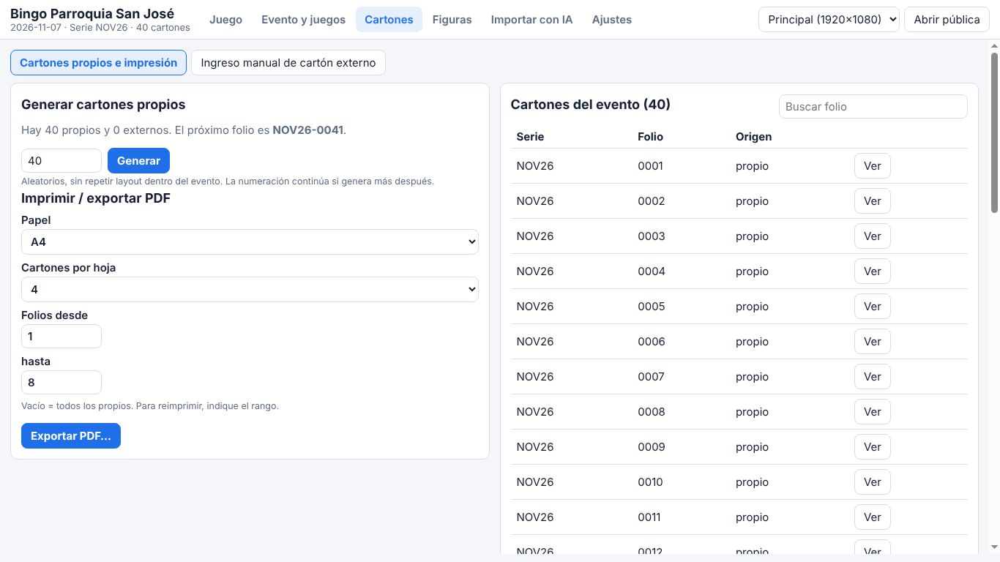
Generar
Indique la cantidad y pulse Generar. Los cartones son aleatorios, cumplen los rangos de cada columna y nunca repiten la misma disposición dentro del evento. El folio es correlativo y continúa si genera más después (máximo 50.000 por vez; puede repetir la generación).
Exportar e imprimir
- Elija Papel (Carta o A4) y cartones por hoja (1, 2 o 4).
- Opcional: indique el rango de folios desde / hasta. Vacío = todos los propios. Así se reimprime un rango.
- Pulse Exportar PDF… y elija dónde guardarlo. Imprima el PDF con su lector habitual, a escala 100%.
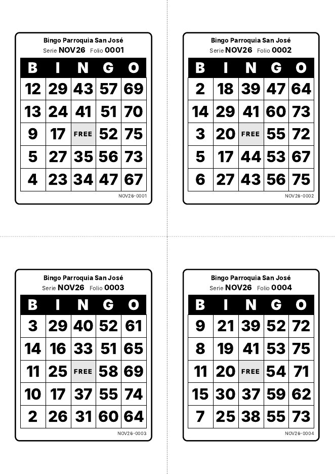
Lista de cartones
La lista muestra serie, folio y origen (propio o externo). Use Buscar folio y Ver para revisar un cartón (y su foto, si vino de la importación con IA).
7. Conducir un juego
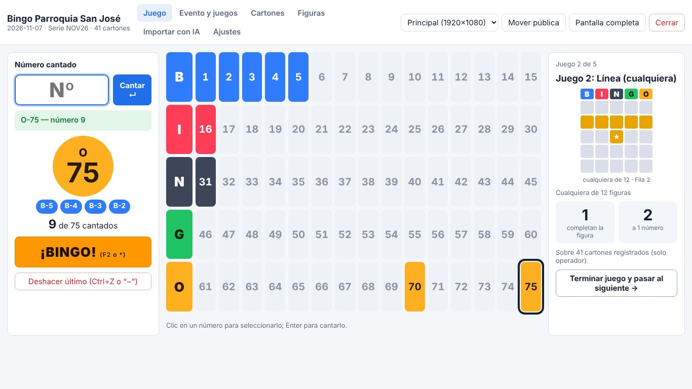
Cantar un número
- Escriba el número en el teclado numérico y pulse Enter. También acepta la letra:
B12. - Si el número está fuera de rango (1 a 75), ya salió o no corresponde a la letra escrita, aparece un aviso rojo y no se registra.
- Un clic en el tablero solo selecciona el número; hay que pulsar Enter para cantarlo (evita errores por clic accidental).
- Esc borra lo escrito.
Deshacer
Con el campo vacío, pulse − del teclado numérico (o Ctrl+Z, o el botón). Se pide confirmación; el foco queda en "Cancelar", así que Enter cancela. Solo se deshacen números del juego en curso.
Panel derecho (solo operador)
- Juego actual (Juego 2 de 5), figura dibujada y su descripción. Los grupos ("cualquiera de") rotan entre sus variantes.
- Completan la figura y a 1 número: cuántos cartones registrados del evento están en esa situación. No se muestra en la pantalla pública.
- Ganadores del juego y botón Terminar juego.
8. Validar un ¡BINGO!
- Pulse ¡BINGO!, F2 o *.
- Escriba el folio tal como lo dice el jugador:
12,0012oNOV26-0012. Si el folio existe en más de una serie, elija la serie. - Se muestra el cartón: en azul lo cantado, con borde naranja lo que falta para la figura.
- La aplicación indica VÁLIDO o NO VÁLIDO y el motivo.
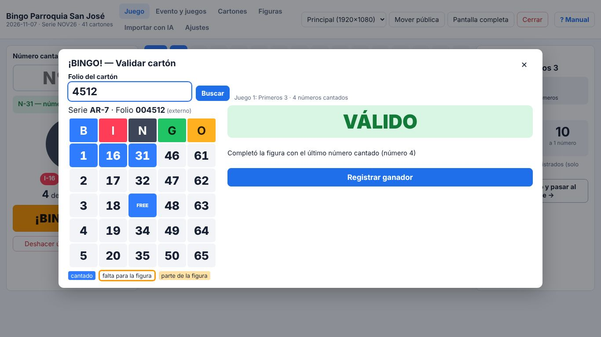
Regla: un bingo es válido solo si la figura se completó con el último número cantado. Si se completó antes, se informa en qué número y se marca NO VÁLIDO.
Si es válido:
- Registrar ganador (guarda serie, folio, juego y cantidad de números cantados).
- Mostrar en pantalla pública: anuncio grande con serie y folio. Quitar lo oculta.
- Validar otro cartón (empate) o Terminar juego.
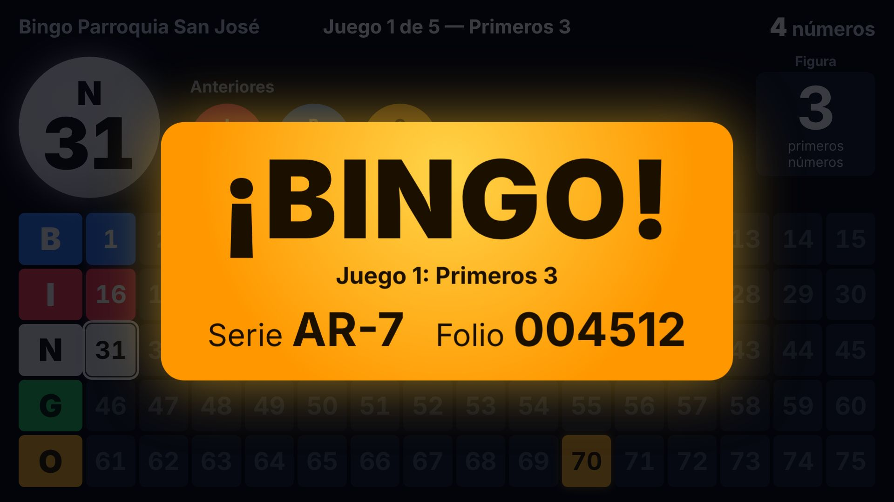
Empates
Se pueden registrar varios ganadores en el mismo juego. Con dos o más, el diálogo muestra la ayuda de Desempate: escriba una bola de desempate (no se registra como número cantado) y la aplicación indica qué cartón empatado la tiene; luego puede anotarlo. La regla de desempate la decide la organización.
9. Terminar un juego
El botón Terminar juego (panel derecho, o en el diálogo ¡BINGO! tras registrar un ganador) cierra el juego en curso haya tenido ganador o no. La confirmación indica si tiene ganadores y qué pasará después.
- Se pasa al siguiente juego pendiente. Si el evento no acumula números, el tablero empieza vacío.
- En el último juego el botón también está disponible: al terminarlo se cierra la secuencia, la pantalla pública muestra "¡Gracias por jugar!" y ya no se pueden cantar números.
- Un juego terminado se puede Reabrir desde "Evento y juegos".
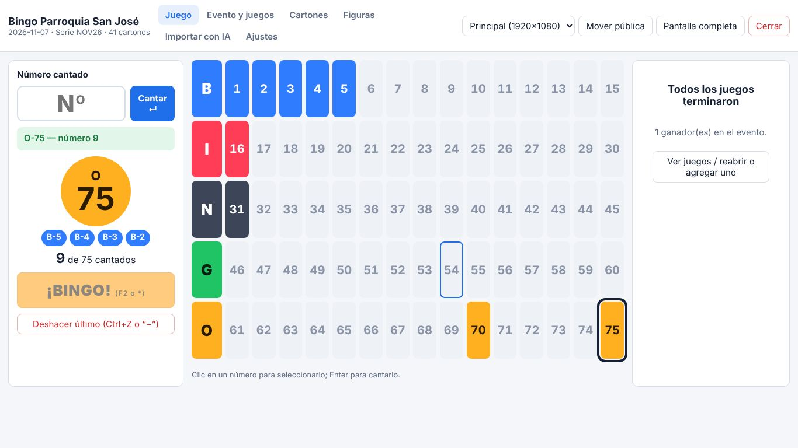
10. Figuras
Hay tres tipos de figura:
- Máscara fija: celdas concretas del cartón (X, L, T, Marco, Columna B, Cartón lleno…).
- Cualquiera de varias (grupo): gana quien complete cualquiera de las máscaras del grupo. Línea (cualquiera) incluye las 5 filas, las 5 columnas y las 2 diagonales.
- Primeros N números: gana quien marque N números de su cartón; se elige si el FREE cuenta.
El centro (FREE) siempre está marcado. La biblioteca precargada incluye: Primeros 3, Línea (cualquiera), Línea horizontal (cualquiera), Columna (cualquiera), Columna B/I/N/G/O, Diagonal, X, L, L (cualquier orientación), T, Marco y Cartón lleno.
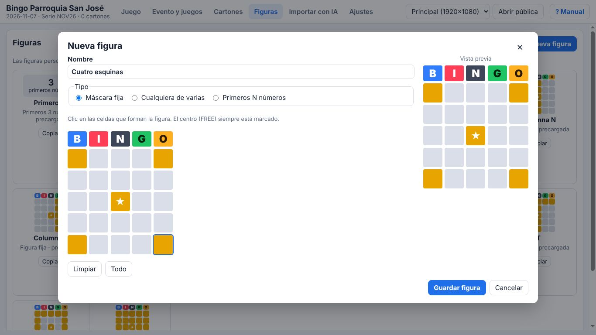
- Nueva figura o Copiar una existente para modificarla. Las precargadas no se editan ni se borran.
- Las figuras personalizadas se guardan para usarlas en otros eventos. Una figura en uso en algún juego no se puede borrar.
11. Cartones externos: ingreso manual
Si se acaban los cartones impresos y se reparten cartones de otro origen (comerciales o de otra aplicación), deben registrarse para poder validarlos por folio. Se guardan con su serie y folio tal como vienen impresos, incluidos los ceros a la izquierda.
Pestaña Cartones → Ingreso manual de cartón externo:
- Escriba la serie, Enter, el folio, Enter.
- Escriba los 24 números columna por columna (B, I, N, G, O; de arriba hacia abajo). El cursor avanza solo cuando el número ya no admite otro dígito (en la B, tras un "2" avanza; tras un "1" espera). Si no avanza, pulse Enter.
- Ctrl+Enter o Confirmar y guardar.
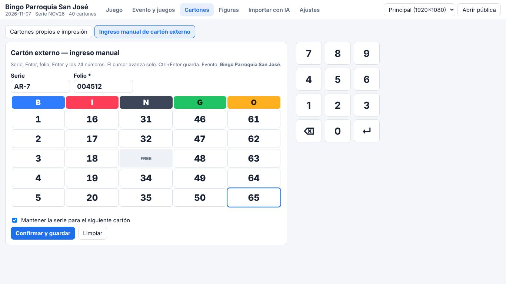
- En rojo, celdas fuera de rango o repetidas; no se puede guardar hasta corregirlas.
- Si la serie + folio ya existe en el evento, se avisa y no se guarda.
- "Mantener la serie" deja la serie escrita para el siguiente cartón y lleva el cursor al folio.
- Retroceso en una celda vacía vuelve a la anterior; las flechas mueven el cursor.
12. Importar cartones con IA
Es la forma rápida de registrar cartones externos: se fotografían y la IA (Claude, de Anthropic) lee serie, folio y números. Es el único módulo que usa internet y requiere una API key de Anthropic (sección 13). Sin API key o sin internet, use el ingreso manual o transcriba mirando la foto.
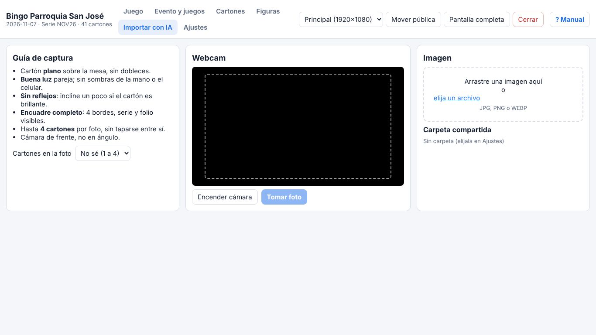
Capturar
- Guía: cartón plano, buena luz, sin reflejos, encuadre completo (4 bordes, serie y folio visibles), cámara de frente. Hasta 4 cartones por foto.
- Webcam: Encender cámara → Tomar foto.
- Archivo: arrastre una imagen (JPG, PNG o WEBP) o elíjala.
- Carpeta compartida: las fotos tomadas con el celular que lleguen a la carpeta configurada (por ejemplo sincronizada con OneDrive o Google Drive) aparecen en la lista; pulse "Usar".
- Si sabe cuántos cartones hay en la foto, indíquelo: mejora la lectura.
Revisar y confirmar (obligatorio)
Se muestran la foto y los cartones reconstruidos lado a lado. Nada se guarda sin su confirmación.
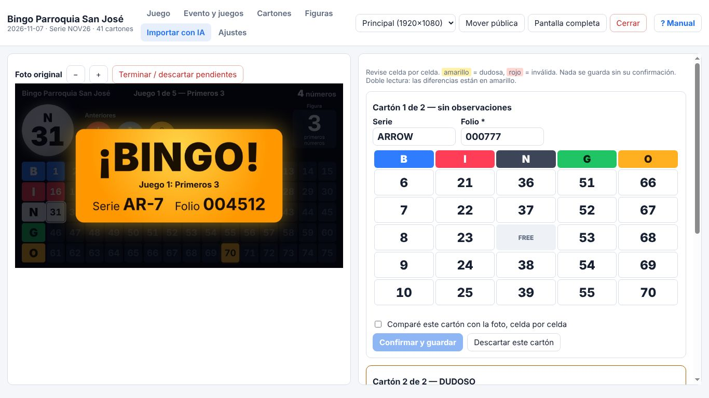
- En amarillo, celdas dudosas; en rojo, inválidas. Un cartón con problemas aparece como DUDOSO y con los motivos.
- Corrija lo necesario, marque "Comparé este cartón con la foto, celda por celda" y pulse Confirmar y guardar.
- Doble lectura (opcional, en Ajustes): se hacen dos lecturas independientes y las diferencias se marcan en amarillo. Duplica el costo por foto.
- Si la serie + folio ya existe, se avisa y no se guarda.
- La foto se guarda junto al cartón para consulta posterior.
Privacidad: la foto se envía a la API de Anthropic para su lectura. El resto de la aplicación no envía datos a internet. Detalle en la política de privacidad (archivo PRIVACIDAD.md del proyecto; contacto: contacto@saedo.cl).
13. Ajustes
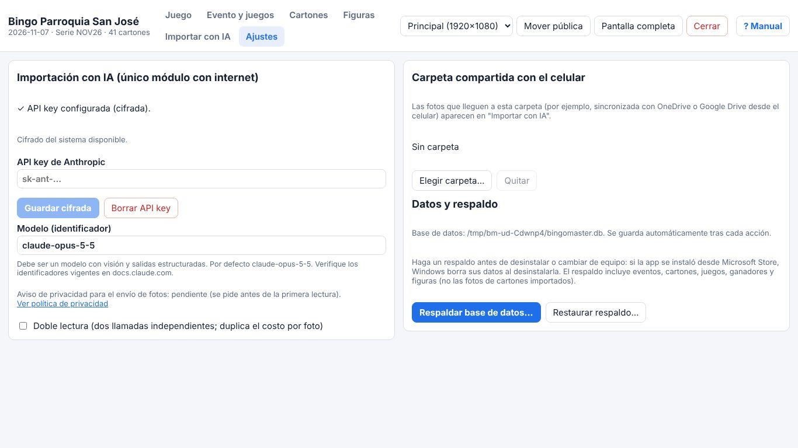
- API key de Anthropic: se guarda cifrada con el sistema de Windows y nunca se muestra. "Borrar API key" la elimina.
- Modelo: identificador del modelo de Claude con visión (por defecto
claude-opus-5-5). Cámbielo solo si sabe qué modelo usar; verifique los identificadores vigentes en la documentación de Anthropic. - Doble lectura: ver sección 12.
- Carpeta compartida: carpeta que se vigila para las fotos del celular.
14. Datos, guardado y respaldo
- Todo se guarda automáticamente tras cada acción; no existe un botón "Guardar".
- Si la aplicación se cierra o el equipo se apaga, al reabrir aparece "Sesión recuperada" con el evento y los números donde quedaron.
- Los datos están en
%APPDATA%\BingoMaster\bingomaster.dby las fotos en la carpetaimagenesjunto a ella. La ruta exacta se muestra al pie del panel del operador y en Ajustes. - Respaldar: Ajustes → Respaldar base de datos… genera un archivo
.dbcon eventos, cartones, juegos, ganadores y figuras (no incluye las fotos de cartones importados). Guárdelo en un pendrive o en la nube. - Restaurar: Ajustes → Restaurar respaldo… reemplaza los datos actuales por los del respaldo. Antes se guarda automáticamente una copia de los datos actuales junto a la base de datos.
- Con el instalador .exe, desinstalar no borra los datos. Si la aplicación se instaló desde Microsoft Store, Windows sí borra sus datos al desinstalarla: haga un respaldo antes.
- La API key no viaja en el respaldo a otro equipo (está cifrada para el equipo original): vuelva a ingresarla en Ajustes.
15. Atajos de teclado
| Tecla | Dónde | Acción |
|---|---|---|
| Enter | Juego | Cantar el número escrito |
| Esc | Juego | Borrar lo escrito / cerrar diálogos |
| − (campo vacío) o Ctrl+Z | Juego | Deshacer el último número (con confirmación) |
| F2 o * | Juego | Abrir ¡BINGO! |
| Ctrl+Enter | Ingreso manual | Guardar el cartón |
| Enter / Tab / flechas | Editor de cartón | Avanzar / moverse entre celdas |
| F1 | Cualquier pestaña | Abrir este manual |
| F11 | Ventana del operador | Pantalla completa |
16. Reglas de validación
- Cartón americano 5×5: B 1–15, I 16–30, N 31–45, G 46–60, O 61–75. Centro = FREE, siempre marcado.
- La letra de cada número se deriva de su rango. Un número se canta una sola vez (dentro de los números vigentes).
- Identidad de un cartón = serie + folio; no puede repetirse en el evento.
- Marcados = números del cartón que fueron cantados + FREE. Se usa solo lo cantado en la aplicación, nunca lo marcado a lápiz en el cartón físico. Igual para propios y externos.
- Un bingo es válido solo si la figura se completó con el último número cantado.
- Con números acumulados, un cartón que ya tenía la figura al empezar el juego queda NO VÁLIDO (no la completó con el último número).
17. Problemas frecuentes
- No veo la opción de terminar el juego / no hay juegos.
- El evento no tiene secuencia de juegos (pasa con eventos creados en versiones anteriores). Pulse Cargar secuencia inicial en el panel de juego o en "Evento y juegos".
- No puedo escribir números.
- Todos los juegos del evento terminaron. Reabra un juego o agregue uno en "Evento y juegos".
- La pantalla pública se abre en el notebook y no en el proyector.
- Verifique que Windows detecte el proyector en modo Extender (Win+P), elija el proyector en el selector y pulse "Mover pública".
- "No existe un cartón con folio…"
- Revise el folio y si el cartón fue registrado en el evento activo. Los externos deben ingresarse antes de validarlos.
- "No se puede deshacer: es de un juego anterior".
- Solo se deshacen números del juego en curso, para no alterar ganadores ya registrados.
- La importación con IA falla.
- Revise la conexión a internet y la API key en Ajustes. Mientras tanto use "Transcribir a mano con la foto al lado" o el ingreso manual.
- SmartScreen bloquea el instalador.
- Pulse "Más información → Ejecutar de todas formas" (el instalador no está firmado).